This document is designed to show that using git on Windows is not a difficult process. In this guide, I will create a repository, make several commits, create a branch, merge a branch, search the commit history, push to a remote server, and pull from a remote server. The majority of this will be done using GUI tools.
Although this guide is targeted for use on Windows, the git gui tool works the same on all platforms. Because of this, git users on other platforms may find useful information here as well.
If you have any comments about this guide, feel free to contact me.
Although you can use the SSH program that comes with git, I prefer to use the PuTTY Agent to keep track of my SSH keys. If you don't already have them, download putty.exe, plink.exe, pageant.exe, and puttygen.exe from the PuTTY web site.
Later in this guide, we will use these programs for securely pushing our changes to a remote server.
First, download msysgit. This download is a single executable which installs the entire git system. While going through the installer, you will want to check the options to add Windows Explorer integration when you right click on a folder.
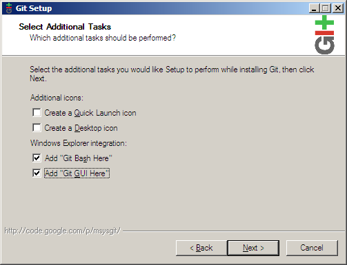
Because we will be using PuTTY as our SSH client, choose Use PLink and fill in the path to the downloaded plink.exe executable.
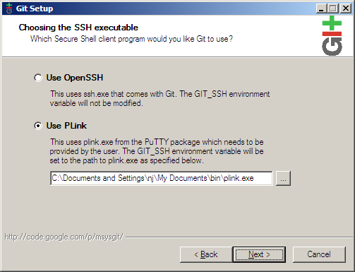
Continue clicking Next until the installation is complete.
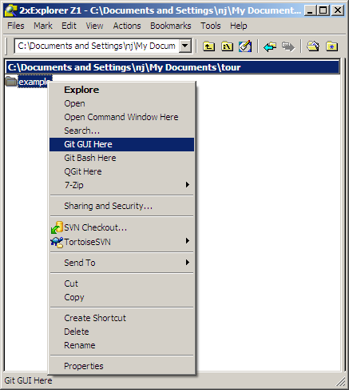
To create a repository, first create the folder you want the project to live under. Next, right click on the folder and choose Git GUI Here. Because there is no git repository in this folder yet, you will be presented with the git gui startup dialog.
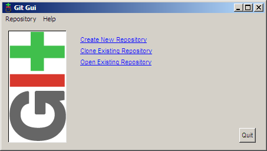
Choosing Create New Repository brings us to the next dialog.
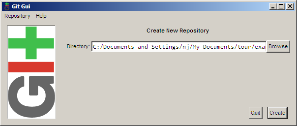
Fill in the path to your new directory and click Create. You will then be presented with the main interface of git gui, which is what will be shown from now on when you right click on your folder and click Git GUI Here.
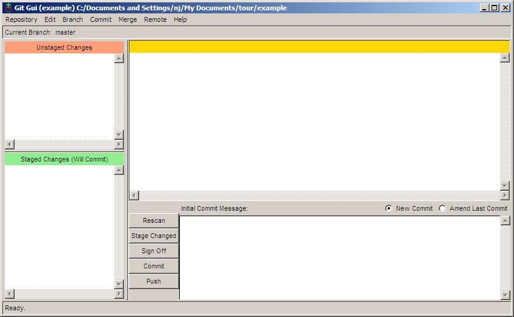
Now that the repository has been set up, you will need to tell git who you are so that commit messages will have the correct author. To do this, choose Edit → Options.
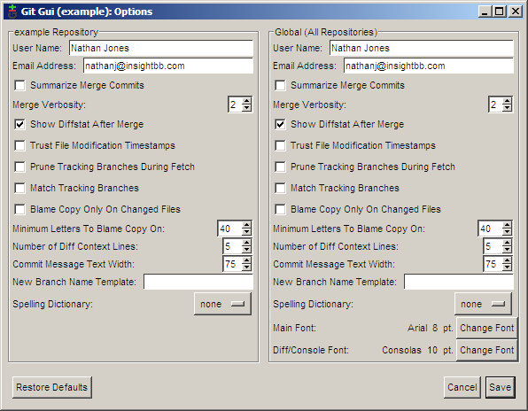
In the options dialog, there are two versions of each preference. On the left side of the dialog are options that you want for this repository only, while the right side contains the global options which apply to all repositories. The defaults for these options are sensible so just fill in the user name and email for now. If you have a favorite font, you may want to set it now as well.
Now that the repository has been created, it is time to create something to commit. For this example, I created a file called main.c with the following content:
#include <stdio.h>
int main(int argc, char **argv)
{
printf("Hello world!\n");
return 0;
}
Clicking the Rescan button in the git gui will cause it to search out new, modified, and deleted files in the directory. In the next screenshot, git gui has found our new file (amazing, I know).
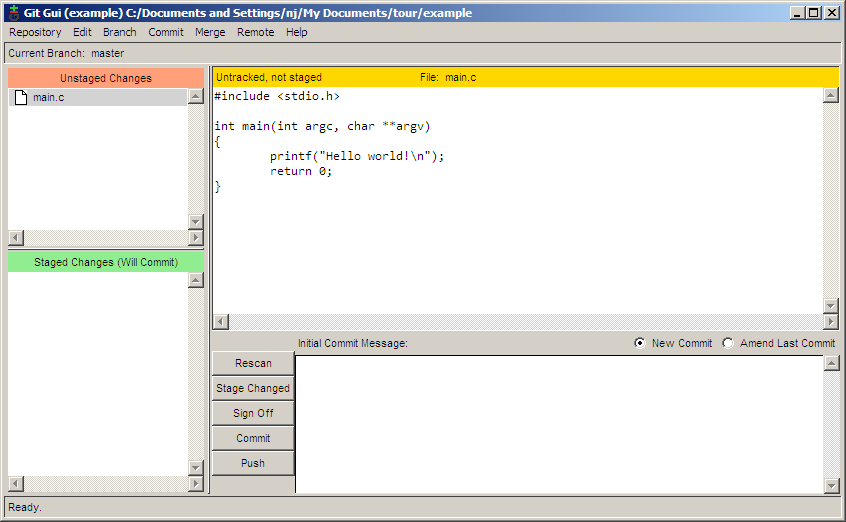
To add the file for committing, click the icon to the left of the filename. The file will be moved from the Unstaged Changes pane to the Staged Changes pane. Now we can add a commit message and commit the change with the Commit button.
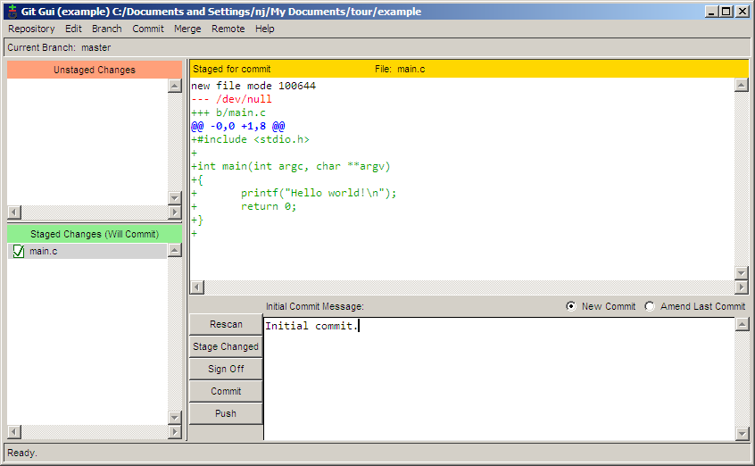
Saying hello to the world is all well and good, but I would like my program to be more personal. Let's have it say hello to the user. Here's my code for that:
#include <stdio.h>
#include <string.h>
int main(int argc, char **argv)
{
char name[255];
printf("Enter your name: ");
fgets(name, 255, stdin);
printf("length = %d\n", strlen(name)); /* debug line */
name[strlen(name)-1] = '\0'; /* remove the newline at the end */
printf("Hello %s!\n", name);
return 0;
}
I had some trouble figuring out why a newline was printed after the user's name, so I added a debugging line to help me track it down. I would like to commit this patch without the debug line, but I want to keep the line in my working copy to continue debugging. With git gui, this is no problem. First, click Rescan to scan for the modified file. Next, click the icon to the left of the filename to stage all modifications for commit. Then, right click on the debug line and chose Unstage Line From Commit.
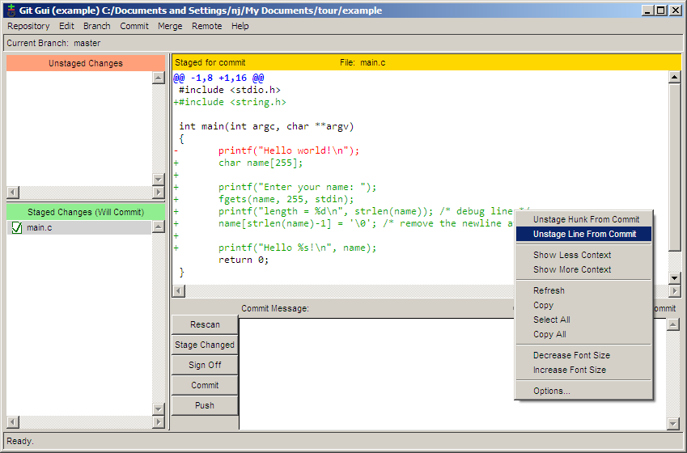
Now, the debug line has been unstaged, while the rest of the changes have been staged. From here, it is just a matter of filling in the commit message and clicking Commit.
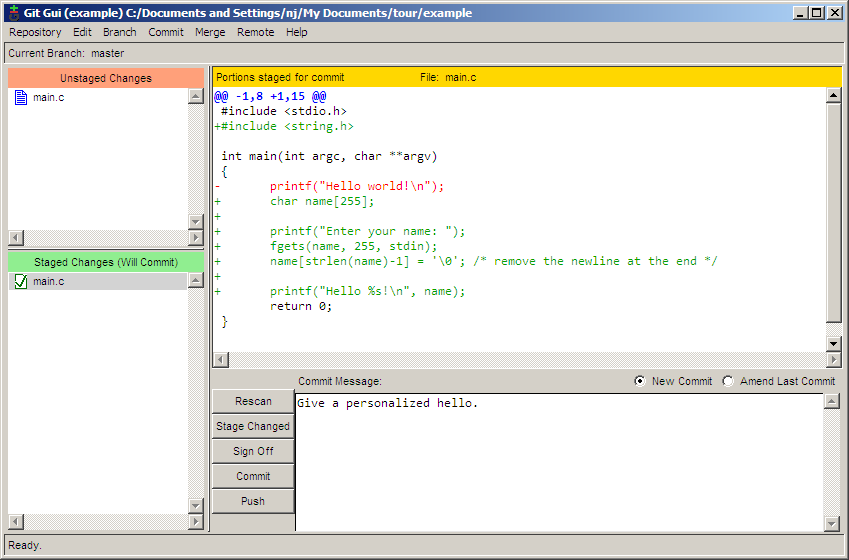
Now let's say that we want to start adding new features for our next big version of the program. But, we also want to keep a stable, maintenance version of the program to fix bugs on. To do this, we will create a branch for our new development. To create a new branch in git gui, choose Branch → Create. The big feature that I would like to add is to ask the user for their last name, so I am calling this branch lastname. The default options in the Create Branch dialog are all fine, so just enter the name and click Create.
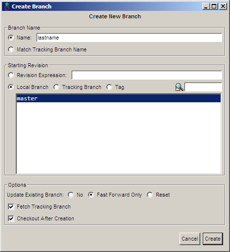
Now that I am on the lastname branch, I can make my new modifications:
#include <stdio.h>
#include <string.h>
int main(int argc, char **argv)
{
char first[255], last[255];
printf("Enter your first name: ");
fgets(first, 255, stdin);
first[strlen(first)-1] = '\0'; /* remove the newline at the end */
printf("Now enter your last name: ");
gets(last); /* buffer overflow? what's that? */
printf("Hello %s %s!\n", first, last);
return 0;
}
And then I can commit the change. Note here that I am committing using a different name. This is to show off something later. Normally you would always use the same name when committing.
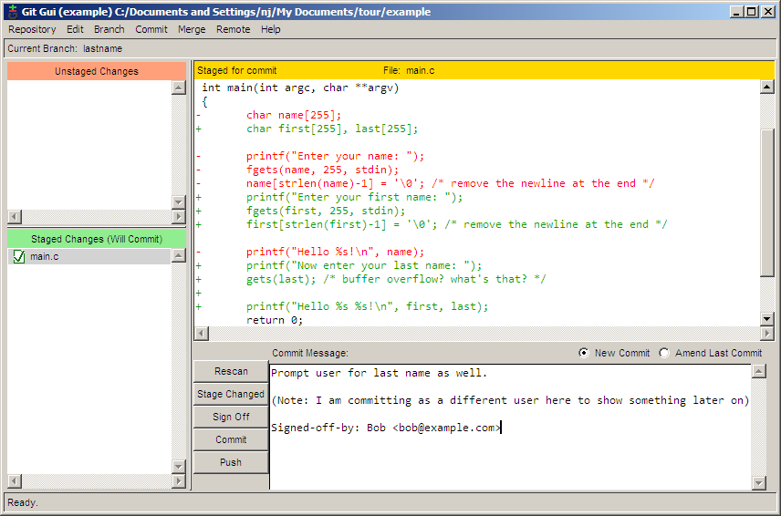
Meanwhile, a user informs us that not displaying a comma when directly addressing someone is a serious bug. In order to make this bug fix on our stable branch, we must first switch back to it. This is done using Branch → Checkout.
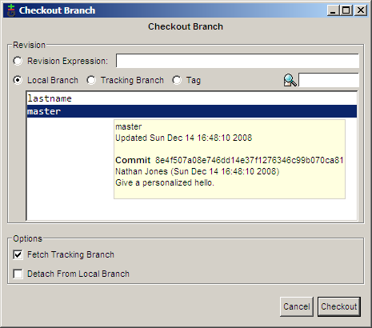
Now we can fix our major bug.
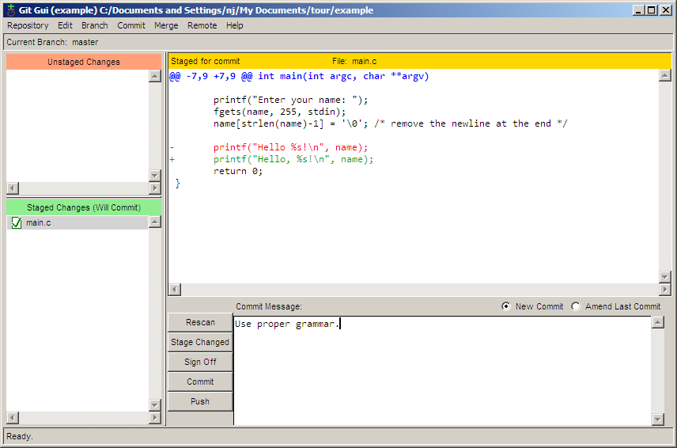
If we choose Repository → Visualize All Branch History, we can see how our history is shaping up.
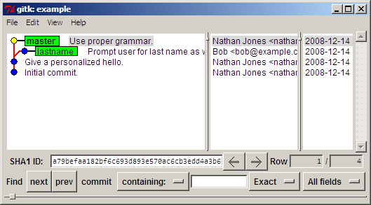
After days of work, we decide that our lastname branch is stable enough to be merged into the master branch. To perform the merge, use Merge → Local Merge.
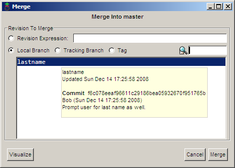
Because the two different commits made two different modifications to the same line, a conflict occurs.
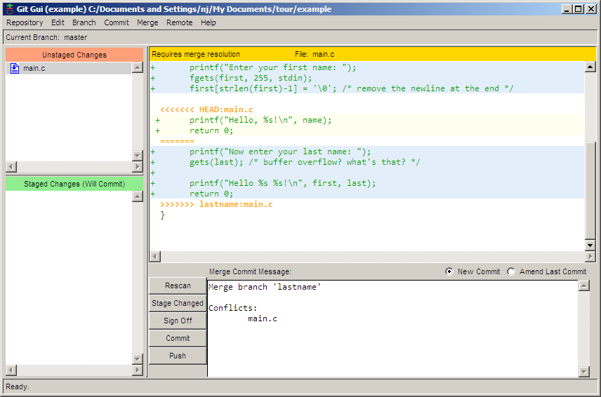
This conflict can be resolved using any text editor. After resolving the conflict, stage the changes by clicking the file icon and then commit the merge by clicking the Commit button.
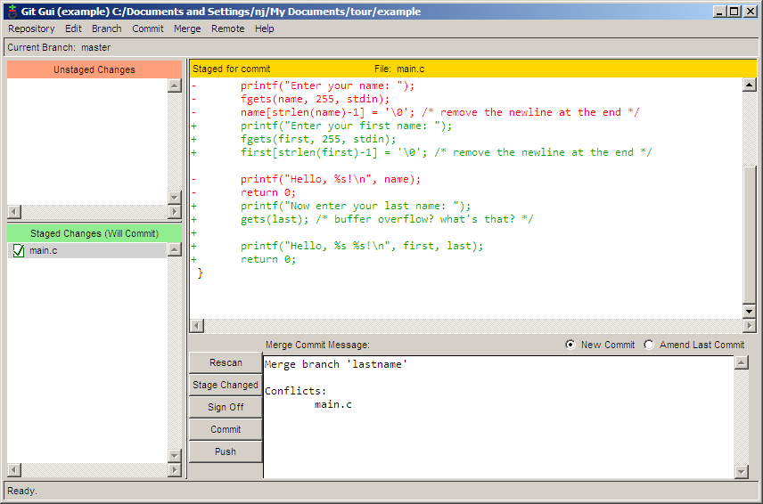
The main.c file is starting to get a bit big, so I decided to move the user prompting portion of the code into its own function. While I was at it, I decided to move the function into a separate file. The repository now contains the files main.c, askname.c, and askname.h.
/* main.c */
#include <stdio.h>
#include "askname.h"
int main(int argc, char **argv)
{
char first[255], last[255];
askname(first, last);
printf("Hello, %s %s!\n", first, last);
return 0;
}
/* askname.c */
#include <stdio.h>
#include <string.h>
void askname(char *first, char *last)
{
printf("Enter your first name: ");
fgets(first, 255, stdin);
first[strlen(first)-1] = '\0'; /* remove the newline at the end */
printf("Now enter your last name: ");
gets(last); /* buffer overflow? what's that? */
}
/* askname.h */ void askname(char *first, char *last);
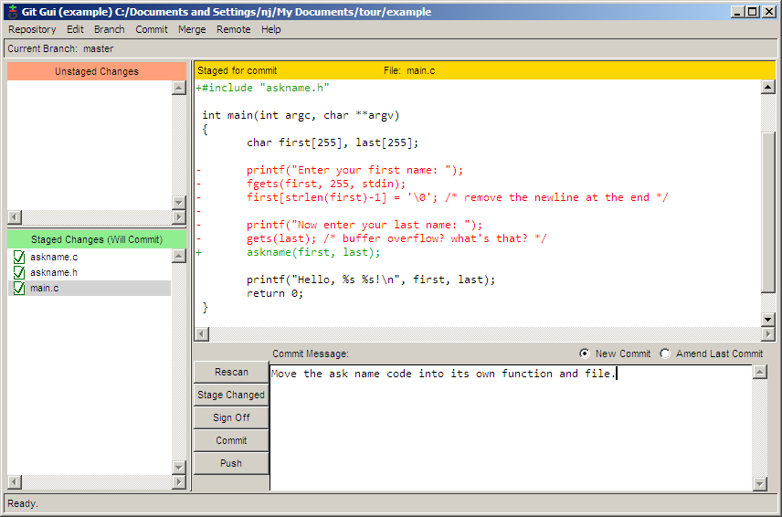
The history of the repository can be viewed and searched by choosing Repository → Visualize All Branch History. In the next screenshot, I am trying to find which commit added the last variable by searching for all commits which added or removed the word last. Commits which match the search are bolded, making it quick and easy to spot the desired commit.
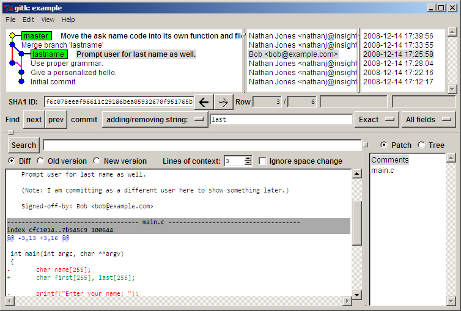
A few days later, someone looks through our code and sees that the gets function could cause a buffer overflow. Being the type to point fingers, this person decides to run a git blame to see who last modified this line of code. The problem is that Bob is the one who committed the line, but I was the one who last touched it when I moved the line into a different file. Obviously, I am not to blame (of course). Is git smart enough to figure this out? Yes, it is.
To run a blame, select Repository → Browse master's Files. From the tree that pops up, double click on the file with the line in question which in this case is askname.c. Hovering the mouse over the line in question shows a tooltip message that tells us all we need to know.
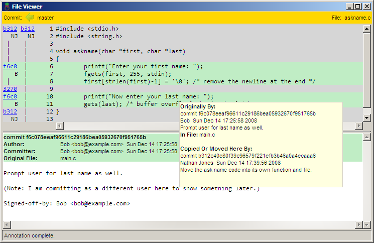
Here we can see that the line was last modified by Bob in commit f6c0, and then I moved it to its new location in commit b312.
Before pushing to a remote server, you must first create a SSH public and private key pair. By using SSH, you will be able to securely authenticate to the server that you are who you say you are. Creating the key pair is a simple process. Begin by running the puttygen.exe program downloaded earlier. Next, click the Generate button to generate the keys. After processing for a few seconds, click the Save private key button to save your new private key. Copy the public key to the clipboard in preparation for the next step. I would recommend not clicking the Save public key button because the saved file is in a non-standard format; trying to use it with other software might be problematic.
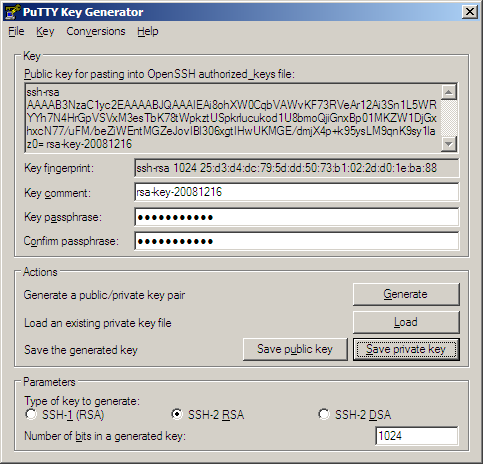
Now that the keys are generated, the remote servers need to know about it. If you would like to use github to host your code, just go to your account page and paste in the public key.
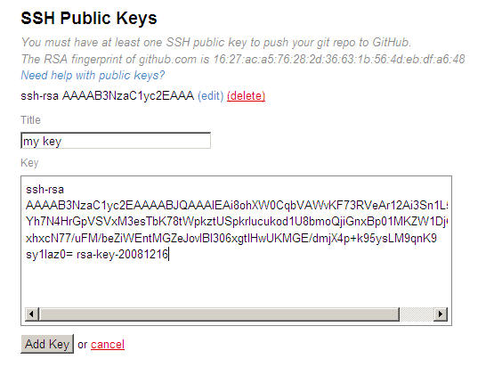
Now github has our public key, but we do not yet have github's. To remedy this, launch putty.exe, connect to github.com, and click Yes to accept github's public key. You can safely close the login window that opens up after accepting the key.
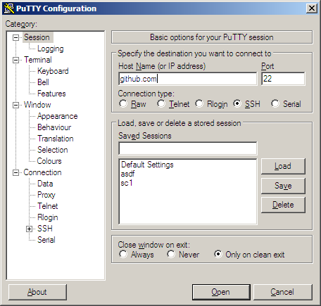
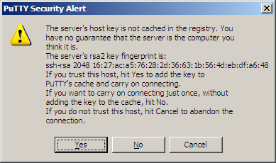
We need our private key to be loaded up to use with our public key, so launch pageant.exe. This program will create an icon in your system tray. Double clicking on the icon will open up a window into which the private key can be added. Once the private key is added, the agent will sit in the background and provide authentication when needed.
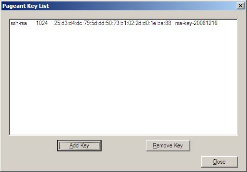
Now that our client and server can authenticate each other, it is time to push! Remote → Push will open up the push dialog. Typing in the commit address for the project and clicking Push will send the changes on their way.
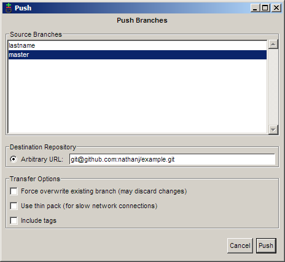
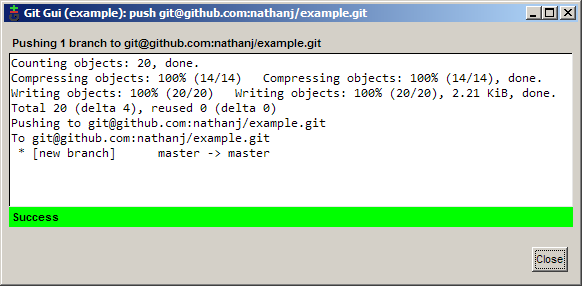
Of course, typing in the remote url would become quite annoying if we had to do it with every push. Instead, git allows us to alias the long urls using remotes. Git gui currently does not have a way to add a remote, so the command line must be used. Right click on the repository folder and choose Git Bash Here. In the prompt, enter the following command:
git remote add github git@github.com:nathanj/example.git
Note: After adding a remote, close and reopen git gui for it to recognize the new remote.
Now the remote github is aliased to the url git@github.com:nathanj/example.git. When viewing the push dialog in git gui, a convenient drop down list of remotes is shown.
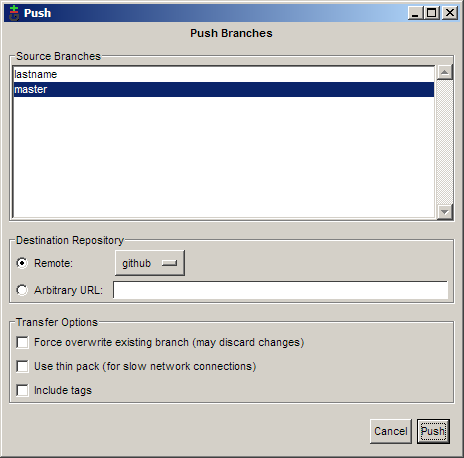
Because our code is so useful, dozens of people have downloaded and now use our program. One person in particular, Fred, has decided to fork our project and add his own commits. Now that he's added his code, he would like us to pull those commits from him into our repository. To do this, first create another remote.
git remote add fred ssh://fred@192.168.2.67/home/fred/example
Now we can fetch Fred's changes using Remote → Fetch from → fred.
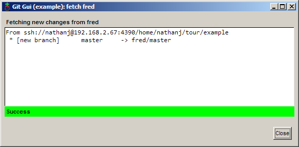
After the fetch, Fred's commits have now been added to our local repository under the remotes/fred/master branch. We can use gitk to visualize the changes that Fred has made.

If we like all of Fred's changes, we could do a normal merge as before. In this case though, I like one of his commits but not the other. To only merge one of his commits, right click on the commit and choose Cherry-pick this commit. The commit will then be merged into the current branch.
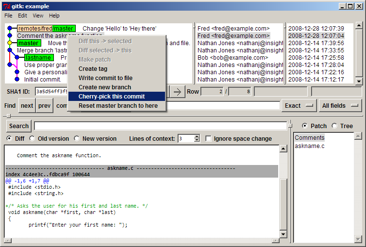
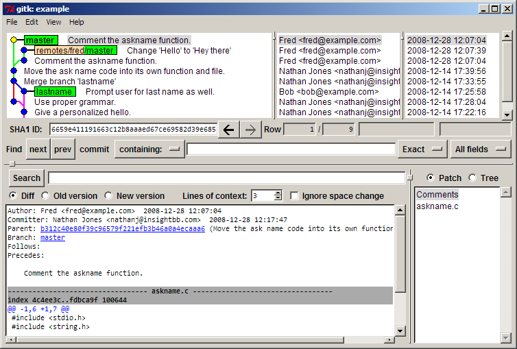
We can now push a final time to send Fred's patch to our github tree for everyone to see and use.
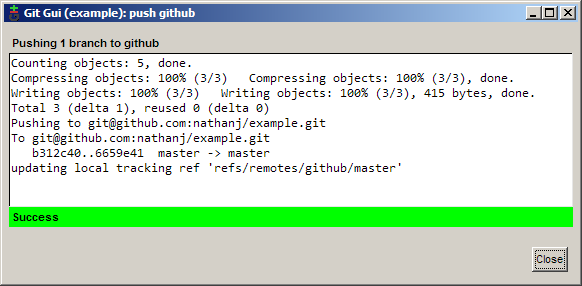
In this guide, I have shown how to do many common tasks in git using GUI tools. I hope that this guide has shown that it is not only possible but easy to use git on Windows without having to use the Windows shell for most operations.
If you have any comments about this guide, feel free to contact me.